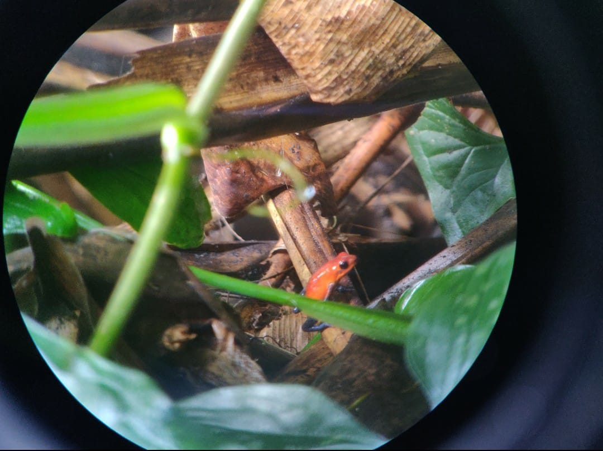

As you can maybe tell, I created this site in HTML for hosting on GitHub! This was both fun and difficult, which seems to be the motto when learning new coding languages. In my first iteration of and HTML site, I went very simple. I wanted a 1 page site with an image and some color and font changes. The biggest challenges with coding I have found, is that if even one bracket is missing, your entire page can error out. Learning these codings first gave me a higher appreciation for Markdown and DITA language, since those rely on less brackets. However, the triumphs of fixing that code and having a site with centered photos, nice asthetics, and most importantly- NAVIGATABLE - are unmatched by any other thing I have learned thus far.
Here is a view my first HTML&CSS project here so you can see my growth from a single page: Link Here
The two main improvements I wanted to make in my grasp of these language were to improve the look and increase the navigation on my site. As is visible in the site you are now navigating, I was able to find code via W2Schools.com to assist me in learning how to add a nav tag to include new HTML files as separate pages that I link in a navigation bar (to the right). Also, I used some tactics to add in and alter my photos at the bottom of each page as another visual piece for site visitors. Figuring out the CSS and HTML coding for this was a bit challenging, and not my original want, but I settled for what I could figure out and hope to improve and learn more to make it look how I want at a later time. I originally wanted to find a way of having the photos stretch as a long rectangle at the top of each page as a visual piece before the writing, but since I couldn't seem to change the text wrapping and location, I settled for transforming each photo into a circle and centering them at the bottom of the page.
The invisible piece of my improvements in HTML&CSS literacy is the confidence in which I could search and apply each change to my site. I was able to check my work and know exactly what line of code (except for in the instances where I cannot find the missing end tag!) I could change to make each part look better. This literacy will be useful in troubleshooting and understanding where things go wrong for future projects. I also find myself "inspecting" sites I find pleasing to the eye, to see how they made each portion. Sometimes the text can be overwhelming, but I'm sure I will know more as I continue to explore.
Do you have any tips on HTML&CSS coding to share? Contact me at kobi0025@umn.edu to let me know!
